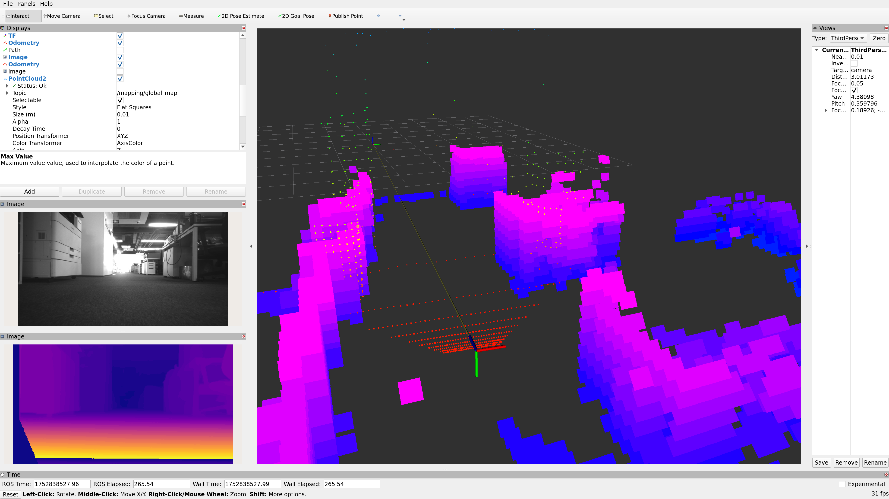
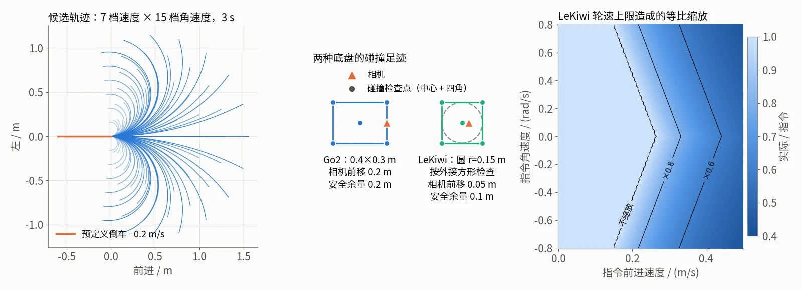

TinyNav
TinyNav 是团队维护的开源双目导航栈。我的部分是把它接到 LeKiwi 三轮全向底盘上：告诉规划器新底盘的外形和相机位置，并把速度指令带超时保护地交给底盘。

- 项目
- 开源双目导航栈：双目深度、视觉惯性里程计、建图、局部规划，一直到底盘控制
- 我做的
- LeKiwi 底盘适配：规划器的外形与相机偏置配置、
/cmd_vel桥接和 0.5 s 超时停车、键盘遥控与远程 RViz 脚本、numba 缓存自恢复、可选的点云体素确认 - 技术栈
- ROS 2 · Python · numba · LeRobot LeKiwi · RViz
- 团队上游部分
- TensorRT 双目深度与特征匹配、GTSAM 的 IMU 预积分优化、DINOv2 回环、ESDF 轨迹打分
- 适配要点
- 规划器从相机位姿反推底盘中心，再按足迹检查碰撞。换到 LeKiwi，相机前移量从 Go2 的 0.2 m 改为 0.05 m，外形改为半径 0.15 m 的圆，安全余量 0.1 m。
- 目前进展
- 已在 LeKiwi 实机上跑通；适配代码在本地提交，没有提交上游
方法一览
| 名称 | 怎么工作 | 输入 / 条件 | 在栈里的位置 |
|---|---|---|---|
| 双目深度（立体匹配网络） | 左右红外图逐像素找视差，深度 = 焦距 × 基线 ÷ 视差；网络用 TensorRT 加速，默认一个轻量模型，可切换到 FoundationStereo | 已校正的左右图、内参和基线 | 感知节点 |
| SuperPoint | 自监督训练的关键点检测 + 描述子网络 | 单张灰度图 | 感知节点，提特征 |
| LightGlue | 基于注意力的特征匹配网络，可提前退出以省算力 | 两张图的 SuperPoint 特征 | 感知节点，跨帧匹配 |
| PnP（Perspective-n-Point） | 由已知三维点和它们在新图里的像素位置解出相机位姿 | 上一关键帧的深度 + 当前帧匹配点 | 给优化一个位姿初值 |
| IMU 预积分 | 把两帧之间的上百条 IMU 读数积成一个相对运动约束，状态更新时不必重积 | 加速度、角速度和零偏 | 优化里的惯性约束 |
| GTSAM | 因子图优化库；这里在最近 5 个关键帧的滑动窗口里联合优化位姿、速度和 IMU 零偏 | 视觉约束 + 预积分约束 | 视觉惯性里程计（VIO）后端 |
| DINOv2 | 自监督视觉大模型，输出整图特征向量；两帧向量余弦相似度超过 0.90 视为可能回环 | 关键帧图像 | 建图节点，找回环后做位姿图优化 |
| ESDF（欧氏符号距离场） | 栅格里每格到最近障碍的距离，由障碍掩码做距离变换得到 | 滚动占据栅格 | 规划节点，轨迹打分 |
| 3DGS（3D Gaussian Splatting） | 用大量三维高斯椭球表示场景，可微渲染，训练后可实时出新视角 | 关键帧图像 + 位姿 | 离线生成可视化地图 |
LeKiwi /cmd_vel 桥接（我写的） | 把 ROS 2 速度指令换算成 LeKiwi 的机体速度，超时下发零速 | 前进速度、转向角速度 | 规划控制与底盘之间 |
上游导航栈
感知节点先用双目网络得到深度，再用 SuperPoint 与 LightGlue 把当前帧和上一关键帧的特征配起来，PnP 给出位姿初值，IMU 预积分补上两帧之间的运动，最后用 GTSAM 在 5 个关键帧的滑动窗口里联合优化。相机移动超过 0.1 m 或转过 0.1° 就生成新关键帧。建图端用 DINOv2 特征找潜在回环，再做位姿图优化。
- 感知双目深度 + 特征匹配 + IMU，输出相机位姿和深度图
- 建图关键帧、回环、全局点云与占据栅格
- 规划滚动栅格 → ESDF → 候选轨迹打分
- 控制路径 → 速度指令 → 底盘


局部规划怎样避障
规划器把每帧深度沿相机射线投进一张跟着机器人滚动的三维占据栅格（100 × 100 × 10 格，分辨率 0.1 m，即 10 × 10 × 1 m）。旧观测每帧乘 0.99 衰减、整体截断在 ±0.2，所以移走的障碍会慢慢消失。障碍掩码做欧氏距离变换得到 ESDF。


| 项 | 计算 | 权重 |
|---|---|---|
| 碰撞 | 沿轨迹在中心和四角查 ESDF，最近距离 < 1 mm 记为无穷大，直接淘汰 | — |
| 贴近障碍 | 最近距离大于安全余量记 0；否则记 (1 ÷ 距离) × 越早越重的衰减系数 | 100000 |
| 离目标 | 轨迹终点到目标点的距离 | 100 |
| 平顺 | 与上一周期所选轨迹的速度差、角速度差 | 各 10 |
| 倒车门控 | 正前方 0.30 m 内有障碍时只允许 −0.2 m/s 倒车轨迹，否则禁止倒车 | 1×10⁹ 罚分 |
候选共 105 条正向轨迹（7 档速度 × 15 档角速度）加 1 条倒车。全部候选都碰撞时规划节点不再发布新路径；下游控制节点发现路径至少 0.8 s 没刷新，就把速度降到 0。上游规划源码。
接入 LeKiwi
换底盘时规划器需要知道两件事：相机装在机身哪里，机身占多大地方。规划器拿到的是相机位姿，要先减去相机相对控制中心的偏移才得到底盘中心；碰撞检查再按机身前后长度和半宽取四个角。偏移填错，整张足迹会前后错位；外形填错，要么擦碰，要么过窄的通道也不敢进。
| 参数 | Go2（上游默认） | LeKiwi |
|---|---|---|
| 外形 | 矩形 0.4 × 0.3 m | 圆，半径 0.15 m |
| 碰撞检查用的前长 / 后长 / 半宽 | 0.20 / 0.20 / 0.15 m | 0.15 / 0.15 / 0.15 m |
| 相机相对控制中心前移 | 0.20 m | 0.05 m |
| 安全余量 | 0.20 m | 0.10 m |
| 正前方倒车触发距离（从机身前沿算） | 0.30 m | 0.30 m |
第二件事是把速度交给底盘。我写了一个 ROS 2 桥接节点，订阅 /cmd_vel，调用 LeRobot 的 LeKiwi 接口：
- 单位换算角速度 rad/s × 180/π，换成底盘要的 °/s
- 只用两维前进和转向，横向速度固定为 0
- 超时停车每 0.1 s 检查，0.5 s 没有新指令就下发零速
超时保护防止规划或控制节点卡住、退出时，底盘按最后一条指令继续走。节点退出时先停底盘再断开连接。实际下发的指令同时发布到 /lekiwi_control/cmd_vel，方便回看。
LeKiwi 的三个全向轮按 120° 布置，底层把机体速度换成三个轮速，任一轮超过 3000 刻度上限就把三个轮速等比缩小。按这组参数，纯前进最快约 0.27 m/s，原地转向最快约 1.84 rad/s。规划器的速度采样到 0.5 m/s，超过 0.27 m/s 的指令会被缩放（0.5 m/s 时只剩约 53%）。等比缩放保持转弯曲率，路径形状不变，只是走得慢；但规划器打分时假设的速度比实际快，预测的 3 s 轨迹比机器人实际走的长。
配套脚本：键盘遥控节点直接发 /cmd_vel，可以绕开规划器单独驱动底盘；一键启动感知、规划、地图、控制、桥接和 RViz；在另一台电脑上通过 ROS 2 网络发现机载计算机上的话题，远程打开 RViz。
两条控制链路对比
上游已有一个 LeKiwi 控制节点。我没有用它，而是走“通用控制节点 → /cmd_vel → 我的桥接”。对照两边源码：
| 项 | 上游 LeKiwi 节点 | 通用控制节点 + 我的桥接 |
|---|---|---|
| 速度从哪来 | 收到路径就对相邻两个路径点差分，按 0.1 s 间隔求速度 | 控制节点按路径点实际间隔求速度，12 Hz 输出 |
| 与路径点间隔是否一致 | 规划节点每 10 个轨迹点发布 1 个，相邻点相隔约 1.0 s；按 0.1 s 求出的速度会大约 10 倍，再被截到 ±2.0 m/s、±1.0 rad/s | 一致：代码按 10 点步长换算 |
| 加速度限制 | 无 | 线加速度限幅 0.6 m/s²，角速度上限 0.8 rad/s |
| 规划停发时 | 只在收到新路径时下发，路径停了底盘保持最后一条速度 | 路径陈旧至少 0.35 s 开始减速、至少 0.8 s 归零（随实测规划周期放宽）；桥接再兜一层 0.5 s 超时 |
| 底盘是否单独可测 | 与规划耦合 | 键盘遥控直接发 /cmd_vel，可单独测底盘 |
其他本地改动
- numba 缓存损坏后自动恢复。numba 是把 Python 数值函数即时编译成机器码的库，编译结果缓存在磁盘上。规划器三个热点函数（射线投影、候选轨迹生成、ESDF 打分）加载缓存时如果抛出 EOFError 或反序列化错误，就删掉对应的缓存文件重新编译，而不是让节点直接崩掉。
- 建图开始时清掉旧标记。建图节点启动时先发一次删除全部标记，避免 RViz 里残留上一次的地图。
- 全局点云的体素确认。可选开关：把点按 5 cm 体素归并，一个体素至少被 2 个关键帧看到才发布，位置取多次观测的滑动平均，用来压住双目深度在物体边缘产生的飞点。只增量更新新确认的体素，离机器人 100 m 以外的体素每 100 个关键帧清理一次。默认关闭，不改变原有行为。
上游实机演示
以下四段都是团队上游仓库的公开演示，不是我拍的：四足 Go2 与轮式 LeKiwi 的实机导航，以及 3DGS 地图和纯视觉建图。
局限与下一步
- 还没提交上游。LeKiwi 配置和桥接都在本地。上游已有 LeKiwi 控制节点，下一步把上面的对照整理清楚，再决定哪些改动值得提 PR。
- 圆形底盘按外接方形检查。碰撞检查取中心加四个角，半径 0.15 m 的圆被当成边长 0.3 m 的正方形，四角多出约 0.06 m，贴边转弯时偏保守。
- 规划速度和底盘能力不匹配。采样上限 0.5 m/s，底盘纯前进约 0.27 m/s。下一步把 LeKiwi 配置的速度上限降到底盘能力以内，让预测轨迹和实际执行一致。
- 没有自己的实机录像和量化数据。适配在实机上跑通过，但这页的视频都来自上游，也还没有超时停车、通过率等测试记录。